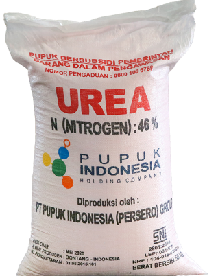
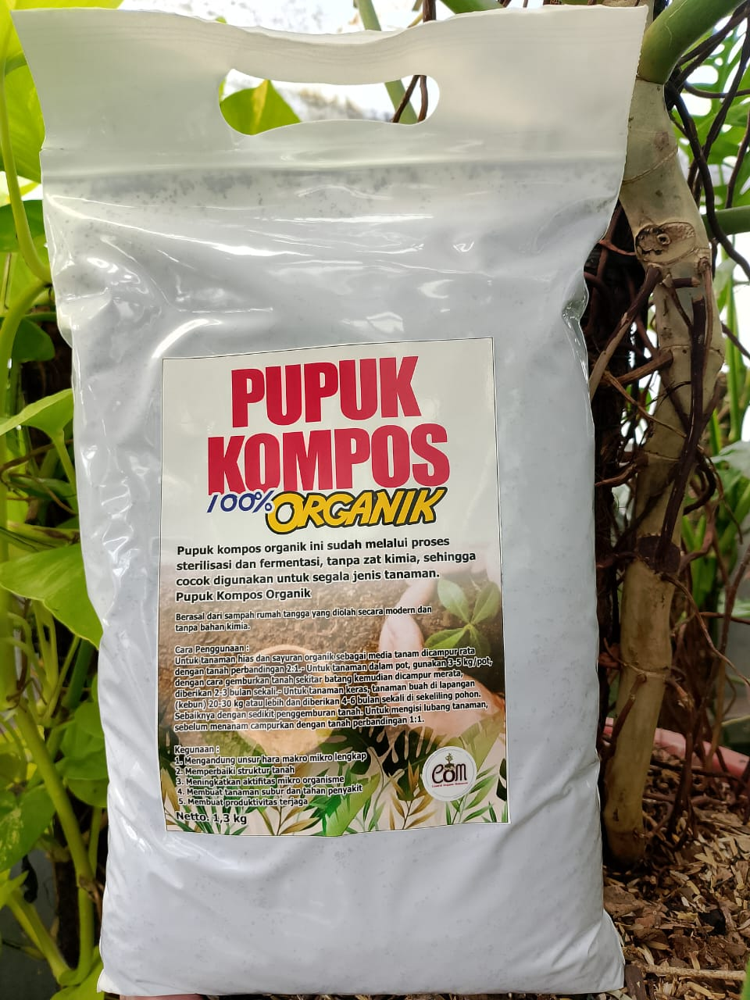
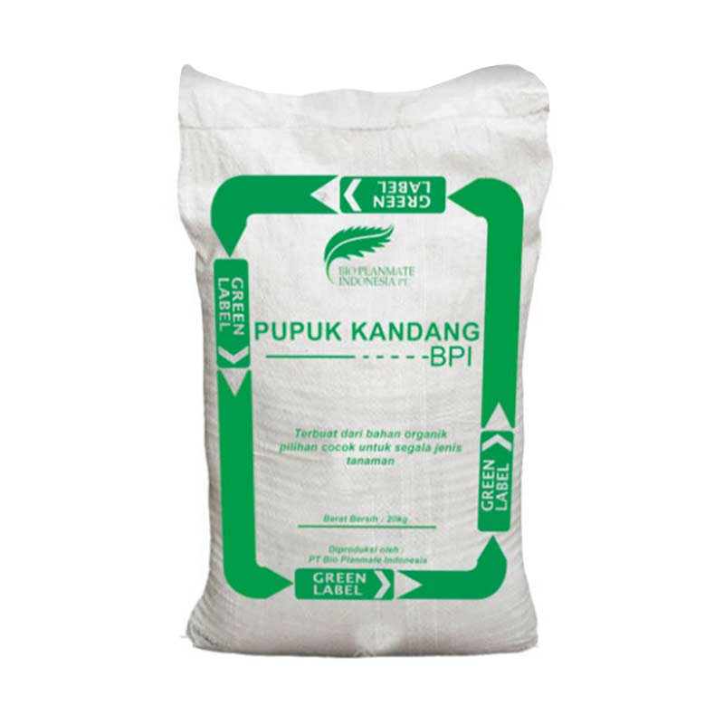

Urea
Rp 100.000
Agromart adalah platform penjualan pupuk yang menyediakan berbagai jenis pupuk berkualitas untuk kebutuhan pertanian anda.

Rp 100.000

Rp 80.000

Rp 120.000

Rp 70.000
| No | Nama | Kategori | Stok | Harga |
|---|---|---|---|---|
| 1 | Urea | Kimia | 50 | Rp 100.000 |
| 2 | Kompos | Organik | 30 | Rp 80.000 |
| 3 | NPK | Kimia | 40 | Rp120.000 |
| 4 | Pupuk Kandang | Organik | 25 | Rp70.000 |